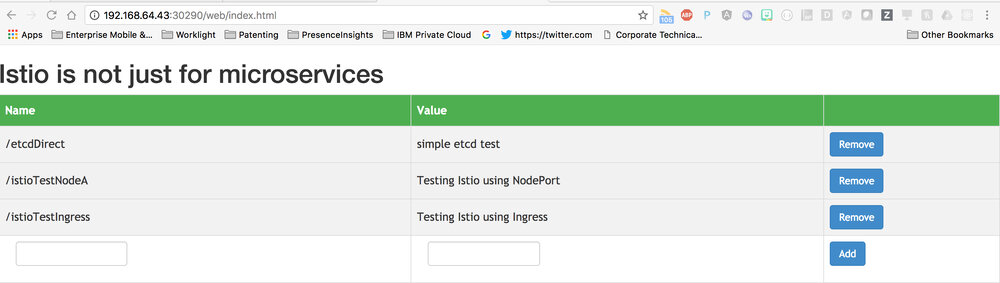
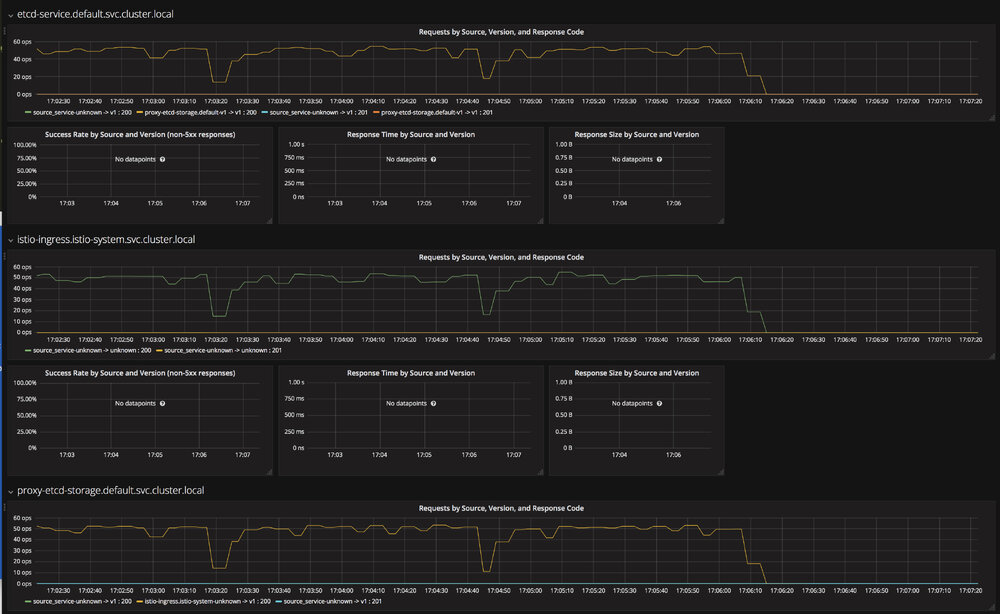
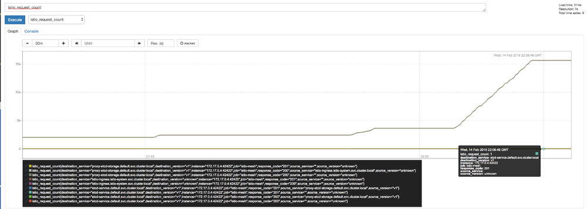
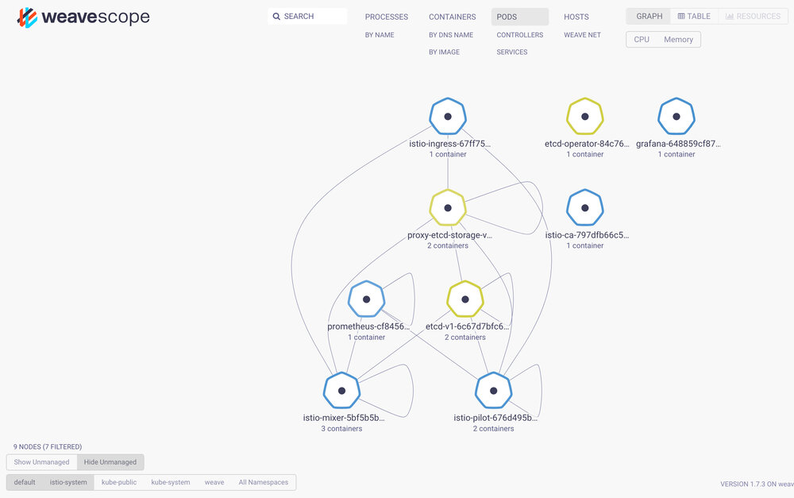
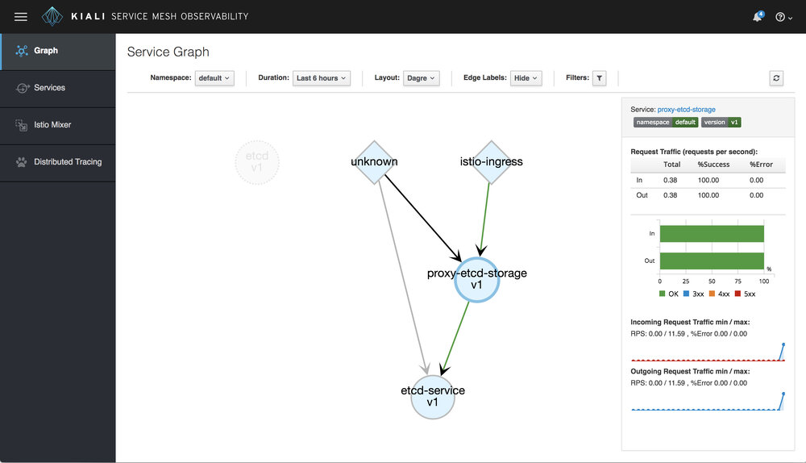

<!DOCTYPE html>

<html lang="zh-cn"><head>
  <meta charset="utf-8">
  
  <title>Istio不仅为微服务而生—使用Istio Service Mesh保护Kubernetes中的服务 | 云原生社区</title>
  

  <!-- mobile responsive meta -->
  <meta name="viewport" content="width=device-width, initial-scale=1, maximum-scale=1">
  <meta name="description" content="通过使用 Istio Service Mesh 来保障 Kubernetes 平台服务。通常可以运行示例代码有助于用户更清晰的理解并将概念应用到实际的案例中。该项目围绕一个简单的 Node.js 应用程序演示了以 Istio Service Mesh 为 ETCD 的持久化数据服务的能力。">
  
  <meta name="author" content=" 云原生社区">
  <meta name="generator" content="Hugo 0.65.3" />

  <!-- plugins -->
  
  <link rel="stylesheet" href="/plugins/bootstrap/bootstrap.min.css">
  
  <link rel="stylesheet" href="/plugins/slick/slick.css">
  
  <link rel="stylesheet" href="/plugins/fontawesome/font-awesome.min.css">
  
  <link rel="stylesheet" href="/plugins/animate/animate.css">
  
  <link rel="stylesheet" href="/plugins/venobox/venobox.css">
  

  <!-- Main Stylesheet -->
  
  <link rel="stylesheet" href="/scss/style.min.css" media="screen">

  <!--Favicon-->
  <link rel="shortcut icon" href="/images/favicon.png " type="image/x-icon">
  <link rel="icon" href="/images/favicon.png " type="image/x-icon">
  <meta property="og:image" content="https://cloudnative.to/images/favicon.png">
  <!--Algolia-->
  <link rel="stylesheet" href="https://cdn.jsdelivr.net/npm/docsearch.js@2.6.3/dist/cdn/docsearch.min.css">
  <!--Twitter card-->
  <meta name="twitter:card" content="summary_large_image" />
  <meta name="twitter:site" content="Cloud Native Community|云原生社区" />
  <meta name="twitter:creator" content="@CloudNativeCN" />
  <meta property="og:url" content="https://cloudnative.to/blog/istio-is-not-just-for-microservices/" />
  <meta property="og:title" content="Istio不仅为微服务而生—使用Istio Service Mesh保护Kubernetes中的服务" />
  <meta property="og:description" content="通过使用 Istio Service Mesh 来保障 Kubernetes 平台服务。通常可以运行示例代码有助于用户更清晰的理解并将概念应用到实际的案例中。该项目围绕一个简单的 Node.js 应用程序演示了以 Istio Service Mesh 为 ETCD 的持久化数据服务的能力。" />
  <meta property="og:image" content="https://cloudnative.to/images/blog/00704eQkgy1fsqwqgx0ylj30rs0kualy.jpg" />
</head>
<body>
<!-- header -->


<div style='margin:0 auto;width:0px;height:0px;overflow:hidden;'>
     
</div>
<header>
  

  <!-- navigation -->
  <div class="navigation bg-white position-relative">
    <div class="container">
      <nav class="navbar navbar-expand-lg navbar-light bg-white">
        <a class="navbar-brand" href="/"></a>
        <button class="navbar-toggler border-0" type="button" data-toggle="collapse" data-target="#navigation"
          aria-controls="navigation" aria-expanded="false" aria-label="Toggle navigation">
          <span class="navbar-toggler-icon"></span>
        </button>

        <div class="collapse navbar-collapse text-center" id="navigation">
          <ul class="navbar-nav ml-auto">
            <li class="nav-item">
              <a class="nav-link" href="/"></a>
            </li>
            
            
            <li class="nav-item">
              <a class="nav-link" href="/blog/">博客</a>
            </li>
            
            
            
            <li class="nav-item">
              <a class="nav-link" href="https://i.cloudnative.to/community/sig/">兴趣小组</a>
            </li>
            
            
            
            <li class="nav-item">
              <a class="nav-link" href="/contribute">投稿</a>
            </li>
            
            
            
            <li class="nav-item">
              <a class="nav-link" href="/job">招聘</a>
            </li>
            
            
            
            <li class="nav-item dropdown">
              <a class="nav-link dropdown-toggle" href="#" role="button" data-toggle="dropdown" aria-haspopup="true"
                aria-expanded="false">
                社区
              </a>
              <div class="dropdown-menu" >
                
                <a class="dropdown-item" href="/team">管理委员会</a>
                
                <a class="dropdown-item" href="https://i.cloudnative.to/academy/">云原生学院</a>
                
                <a class="dropdown-item" href="/city">城市站</a>
                
                <a class="dropdown-item" href="https://i.cloudnative.to/community/">社区资料</a>
                
              </div>
            </li>
            
            
            
            <li class="nav-item dropdown">
              <a class="nav-link dropdown-toggle" href="#" role="button" data-toggle="dropdown" aria-haspopup="true"
                aria-expanded="false">
                资料
              </a>
              <div class="dropdown-menu" >
                
                <a class="dropdown-item" href="http://landscape.opensourcecloud.cn/">云原生生态图景</a>
                
                <a class="dropdown-item" href="/kubebuilder">Kubebuilder 中文文档</a>
                
                <a class="dropdown-item" href="/envoy">Envoy 中文文档</a>
                
                <a class="dropdown-item" href="https://istio.io/latest/zh/">Istio 中文文档</a>
                
              </div>
            </li>
            
            
          </ul>

          
          

          
          <!-- search -->
          <div class="search px-4">
            <button id="searchOpen" class="search-btn"><i class="fa fa-search text-dark"></i></button>
            <div class="search-wrapper">
              <form action="/search">
                <input class="search-box form-control" id="js-algolia-btn" name="s" type="search" placeholder="输入搜索词">
              </form>
              <button id="searchClose" class="search-close"><i class="fa fa-close text-dark"></i></button>
            </div>
          </div>
          
          
          <!-- get start btn -->
          <a href="/contact" class="btn btn-primary hover-ripple">加入我们</a>
          
        </div>
      </nav>
    </div>
  </div>
  <!-- /navigation -->
</header>
<!-- /header -->

	<!-- page title -->
<section class="section bg-cover overlay" style="background-image: url('/'),url('/'),url('/images/backgrounds/page-title-5.jpg');">
  <div class="container">
    <div class="row">
      <div class="col-12">
        <h2 class="text-white mb-3 text-capitalize">Istio不仅为微服务而生—使用 istio service mesh保护 kubernetes中的服务</h2>
        <!-- breadcrumb -->
        
        <p class="text-white">通过使用 Istio Service Mesh 来保障 Kubernetes 平台服务。通常可以运行示例代码有助于用户更清晰的理解并将概念应用到实际的案例中。该项目围绕一个简单的 Node.js 应用程序演示了以 Istio Service Mesh 为 ETCD 的持久化数据服务的能力。</p>
      </div>
    </div>
  </div>
</section>
<!-- /page title -->

	

<!-- blog details -->
<section class="section">
  <div class="container blog">
    <div class="row">
      <div class="col-lg-8">
        <!-- post thumb -->
        <div class="position-relative mb-5">
          
           <div class="card-type"><a href="/categories/service-mesh">Service Mesh</a></div>
        </div>
        <div class="card-meta mb-2">作者  <strong class="text-dark">Todd Kaplinger</strong>
          
          译者
          <strong class="text-dark">
          陈冬
          </strong>
          
            发表于 <strong class="text-dark">2018年6月28日</strong></div>
        <hr>
        <div class="content">
          <p>本文为翻译文章，<a href="https://github.com/todkap/istio-index-conf2018/blob/master/README.md">点击查看原文</a>。</p>
<p>通过使用 Istio Service Mesh 来保障 Kubernetes 平台服务。通常可以运行示例代码有助于用户更清晰的理解并将概念应用到实际的案例中。该项目围绕一个简单的 Node.js 应用程序演示了以 Istio Service Mesh 为 ETCD 的持久化数据服务的能力。</p>
<h2 id="istio-背景">Istio 背景</h2>
<p>Istio 是一个 连接、管理以及保障微服务的开放平台。如需要了解更多 Istio 的信息，请访问<a href="https://istio.io/about/intro.html">介绍页面</a> 。</p>
<h2 id="安装">安装</h2>
<p>假设已对 Kubernetes 有了初步了解。在这个项目中，有一组脚本，假设已预先安装了 Docker、Kubernetes CLI 以及JQ，用于操作 Kubernetes commands 返回的各种 JSON 对象。且有一定层度的 Node.js 知识。</p>
<p><strong>各种工具的连接如下：</strong></p>
<p>Docker 安装：https://docs.docker.com/install/</p>
<p>Kubernetes 安装：https://kubernetes.io/docs/tasks/tools/install-kubectl/</p>
<p>jq 下载地址：https://stedolan.github.io/jq/download/</p>
<p>Node.js 下载地址：https://nodejs.org/en/download/</p>
<h2 id="kubernetes-private">Kubernetes Private</h2>
<p>下面的代码应该可以在任何兼容 Kubernetes 的提供者上运行，并且已经在 Minikube 和私有 IBM Cloud Private 上进行过测试。根据选择的提供者的不同，指令会略有不同。</p>
<h3 id="minikube">Minikube</h3>
<p>Minikube 可用与下载和安装的地址：<a href="https://kubernetes.io/docs/tasks/tools/install-minikube/">点我</a>。Minikube 为学习 Kubernetes 提供了一个简单易用的开发环境。</p>
<h3 id="ibm-私有云">IBM 私有云</h3>
<p>IBM 为开发者提供了其 Kubernetes 运行时的免费社区版，并包含了与企业版生产版本相同的大多数功能，高可用性例外。安装 IBM 私有云服务，请查看  <a href="https://www.ibm.com/support/knowledgecenter/en/SSBS6K_2.1.0/installing/install_containers_CE.html">2.1.0安装向导</a>。</p>
<h2 id="istio-index-conference-2018-application">Istio Index Conference 2018 Application</h2>
<p>从代码入手, 可克隆如下仓库 <code>git clone git@github.com:todkap/istio-index-conf2018.git</code></p>
<h3 id="kubernetes-安装">Kubernetes 安装</h3>
<ul>
<li><strong>Minikube：</strong> 请先部署并第一个启动 Minikube 。在这个项目的根目录下，有一个脚本 <code>createMinikubeEnv.sh</code> ，用于销毁之前创建的 Minikube 环境，并用适当的 Kubernetes 上下文初始化一个新的环境。</li>
<li><strong>IBM 私有云:</strong> IBM 私有云提供了 <a href="https://www.ibm.com/support/knowledgecenter/en/SSBS6K_2.1.0/manage_cluster/cfc_cli.html">configure client</a>，将配置 Kubernetes CLI 指向一个给定的 IBM 私有云设备。</li>
</ul>
<h3 id="部署">部署</h3>
<h4 id="kubernetes-安装-1">Kubernetes 安装</h4>
<p>本项目提供了一个名叫 <code>deploy.sh</code> 的脚本部署 Istio 和应用到 Kubernetes 中。脚本给定了一些冗余的输出，输出各种执行步骤，等待整个系统在退出之前处于 <code>Running</code> 。</p>
<h4 id="helm-安装">Helm 安装</h4>
<p>从 IBM 私有云版本 2.1.0.3 开始，Istio 控制面板可以通过 Helm chart 作为初始化安装的一部分或通过目录安装后安装。该项目包含一个名为 <code>icp-helm-deploy</code> 的附加脚本，利用 IBM 私有云 CLI、Helm CLI 和 Kubernetes CLI 进行组合来安装 Istio 的索引程序。未来简化部署过程，同时促进 Istio 的一些最新的特性，可以为应用程序自动注入 sidecar <a href="https://istio.io/docs/setup/kubernetes/sidecar-injection.html#automatic-sidecar-injection">automatic sidecar injection</a>。</p>
<h3 id="测试">测试</h3>
<p>该项目包含两个用于测试的脚本，这取决于所使用的 Kubernetes 提供者。两个脚本的不同之处在于 IBM 私有云入口地址的设置。根据你选择的提供者选择 <code>testICPEnv.sh</code> 或 <code>testMinikubeEnv.sh</code>。</p>
<p>除了脚本之外，还有一个轻量级的 web 界面，用于与其他api进行交互。</p>
<p></p>
<h3 id="verification">Verification</h3>
<p>为了验证 Istio 的集成成功，脚本执行了一组测试。</p>
<ul>
<li>第一个测试验证一个简单的 put 测试到 ETCD 服务节点上，以验证 ETCD 的连接性。</li>
</ul>
<p><strong>例子输出</strong></p>
<div class="highlight"><pre style="color:#f8f8f2;background-color:#272822;-moz-tab-size:4;-o-tab-size:4;tab-size:4"><code class="language-bash" data-lang="bash">简单 etcd 测试
*   Trying 192.168.64.20...
* TCP_NODELAY set
* Connected to 192.168.64.20 <span style="color:#f92672">(</span>192.168.64.20<span style="color:#f92672">)</span> port <span style="color:#ae81ff">32012</span> <span style="color:#f92672">(</span><span style="color:#75715e">#0)</span>
&gt; PUT /v2/keys/message HTTP/1.1
&gt; Host: 192.168.64.20:32012
&gt; User-Agent: curl/7.54.0
&gt; Accept: */*
&gt; Content-Length: <span style="color:#ae81ff">17</span>
&gt; Content-Type: application/x-www-form-urlencoded
&gt; 
* upload completely sent off: <span style="color:#ae81ff">17</span> out of <span style="color:#ae81ff">17</span> bytes
&lt; HTTP/1.1 <span style="color:#ae81ff">201</span> Created
&lt; content-type: application/json
&lt; x-etcd-cluster-id: cdf818194e3a8c32
&lt; x-etcd-index: <span style="color:#ae81ff">14</span>
&lt; x-raft-index: <span style="color:#ae81ff">15</span>
&lt; x-raft-term: <span style="color:#ae81ff">2</span>
&lt; date: Wed, <span style="color:#ae81ff">14</span> Feb <span style="color:#ae81ff">2018</span> 19:45:24 GMT
&lt; content-length: <span style="color:#ae81ff">102</span>
&lt; x-envoy-upstream-service-time: <span style="color:#ae81ff">1</span>
&lt; server: envoy
&lt; x-envoy-decorator-operation: default-route
&lt; 
<span style="color:#f92672">{</span><span style="color:#e6db74">&#34;action&#34;</span>:<span style="color:#e6db74">&#34;set&#34;</span>,<span style="color:#e6db74">&#34;node&#34;</span>:<span style="color:#f92672">{</span><span style="color:#e6db74">&#34;key&#34;</span>:<span style="color:#e6db74">&#34;/message&#34;</span>,<span style="color:#e6db74">&#34;value&#34;</span>:<span style="color:#e6db74">&#34;Hello world&#34;</span>,<span style="color:#e6db74">&#34;modifiedIndex&#34;</span>:14,<span style="color:#e6db74">&#34;createdIndex&#34;</span>:14<span style="color:#f92672">}}</span>
* Connection <span style="color:#75715e">#0 to host 192.168.64.20 left intact</span>
</code></pre></div><ul>
<li>第二个测试验证节点应用程序可以使用节点应用程序的节点端口处理简单的 ping 请求以及对 ETCD 的代理请求。</li>
</ul>
<p><strong>例子输出</strong></p>
<div class="highlight"><pre style="color:#f8f8f2;background-color:#272822;-moz-tab-size:4;-o-tab-size:4;tab-size:4"><code class="language-bash" data-lang="bash">-------------------------------
simple ping test
*   Trying 192.168.64.20...
* TCP_NODELAY set
* Connected to 192.168.64.20 <span style="color:#f92672">(</span>192.168.64.20<span style="color:#f92672">)</span> port <span style="color:#ae81ff">32380</span> <span style="color:#f92672">(</span><span style="color:#75715e">#0)</span>
&gt; GET / HTTP/1.1
&gt; Host: 192.168.64.20:32380
&gt; User-Agent: curl/7.54.0
&gt; Accept: */*
&gt; 
&lt; HTTP/1.1 <span style="color:#ae81ff">200</span> OK
&lt; x-powered-by: Express
&lt; content-type: text/html; charset<span style="color:#f92672">=</span>utf-8
&lt; content-length: <span style="color:#ae81ff">46</span>
&lt; etag: W/<span style="color:#e6db74">&#34;2e-FL84XHNKKzHT+F1kbgSNIW2RslI&#34;</span>
&lt; date: Wed, <span style="color:#ae81ff">14</span> Feb <span style="color:#ae81ff">2018</span> 19:45:24 GMT
&lt; x-envoy-upstream-service-time: <span style="color:#ae81ff">1</span>
&lt; server: envoy
&lt; x-envoy-decorator-operation: default-route
&lt; 
* Connection <span style="color:#75715e">#0 to host 192.168.64.20 left intact</span>
Simple test <span style="color:#66d9ef">for</span> liveliness of the application!
-------------------------------
test etcd service API call from node app
*   Trying 192.168.64.20...
* TCP_NODELAY set
* Connected to 192.168.64.20 <span style="color:#f92672">(</span>192.168.64.20<span style="color:#f92672">)</span> port <span style="color:#ae81ff">32380</span> <span style="color:#f92672">(</span><span style="color:#75715e">#0)</span>
&gt; PUT /storage HTTP/1.1
&gt; Host: 192.168.64.20:32380
&gt; User-Agent: curl/7.54.0
&gt; Accept: */*
&gt; Content-Type: application/json
&gt; Content-Length: <span style="color:#ae81ff">60</span>
&gt; 
* upload completely sent off: <span style="color:#ae81ff">60</span> out of <span style="color:#ae81ff">60</span> bytes
&lt; HTTP/1.1 <span style="color:#ae81ff">201</span> Created
&lt; x-powered-by: Express
&lt; date: Wed, <span style="color:#ae81ff">14</span> Feb <span style="color:#ae81ff">2018</span> 19:45:24 GMT
&lt; x-envoy-upstream-service-time: <span style="color:#ae81ff">12</span>
&lt; server: envoy
&lt; x-envoy-decorator-operation: default-route
&lt; transfer-encoding: chunked
&lt; 
* Connection <span style="color:#75715e">#0 to host 192.168.64.20 left intact</span>
nodeAppTesting created<span style="color:#f92672">(</span>etcd-service<span style="color:#f92672">)</span> -&gt;<span style="color:#f92672">{</span><span style="color:#e6db74">&#34;key&#34;</span>:<span style="color:#e6db74">&#34;istioTest&#34;</span>,<span style="color:#e6db74">&#34;value&#34;</span>:<span style="color:#e6db74">&#34;Testing Istio using NodePort&#34;</span><span style="color:#f92672">}</span>:<span style="color:#f92672">{</span><span style="color:#e6db74">&#34;action&#34;</span>:<span style="color:#e6db74">&#34;set&#34;</span>,<span style="color:#e6db74">&#34;node&#34;</span>:<span style="color:#f92672">{</span><span style="color:#e6db74">&#34;key&#34;</span>:<span style="color:#e6db74">&#34;/istioTest&#34;</span>,<span style="color:#e6db74">&#34;value&#34;</span>:<span style="color:#e6db74">&#34;Testing Istio using NodePort&#34;</span>,<span style="color:#e6db74">&#34;modifiedIndex&#34;</span>:15,<span style="color:#e6db74">&#34;createdIndex&#34;</span>:15<span style="color:#f92672">}</span>,<span style="color:#e6db74">&#34;prevNode&#34;</span>:<span style="color:#f92672">{</span><span style="color:#e6db74">&#34;key&#34;</span>:<span style="color:#e6db74">&#34;/istioTest&#34;</span>,<span style="color:#e6db74">&#34;value&#34;</span>:<span style="color:#e6db74">&#34;Testing Istio using Ingress&#34;</span>,<span style="color:#e6db74">&#34;modifiedIndex&#34;</span>:13,<span style="color:#e6db74">&#34;createdIndex&#34;</span>:13<span style="color:#f92672">}}</span>
*   Trying 192.168.64.20...
* TCP_NODELAY set
* Connected to 192.168.64.20 <span style="color:#f92672">(</span>192.168.64.20<span style="color:#f92672">)</span> port <span style="color:#ae81ff">32380</span> <span style="color:#f92672">(</span><span style="color:#75715e">#0)</span>
&gt; GET /storage/istioTest HTTP/1.1
&gt; Host: 192.168.64.20:32380
&gt; User-Agent: curl/7.54.0
&gt; Accept: */*
&gt; 
&lt; HTTP/1.1 <span style="color:#ae81ff">200</span> OK
&lt; x-powered-by: Express
&lt; date: Wed, <span style="color:#ae81ff">14</span> Feb <span style="color:#ae81ff">2018</span> 19:45:24 GMT
&lt; x-envoy-upstream-service-time: <span style="color:#ae81ff">14</span>
&lt; server: envoy
&lt; x-envoy-decorator-operation: default-route
&lt; transfer-encoding: chunked
&lt; 
* Connection <span style="color:#75715e">#0 to host 192.168.64.20 left intact</span>
nodeAppTesting<span style="color:#f92672">(</span>etcd-service<span style="color:#f92672">)</span> -&gt;<span style="color:#f92672">{</span><span style="color:#e6db74">&#34;action&#34;</span>:<span style="color:#e6db74">&#34;get&#34;</span>,<span style="color:#e6db74">&#34;node&#34;</span>:<span style="color:#f92672">{</span><span style="color:#e6db74">&#34;key&#34;</span>:<span style="color:#e6db74">&#34;/istioTest&#34;</span>,<span style="color:#e6db74">&#34;value&#34;</span>:<span style="color:#e6db74">&#34;Testing Istio using NodePort&#34;</span>,<span style="color:#e6db74">&#34;modifiedIndex&#34;</span>:15,<span style="color:#e6db74">&#34;createdIndex&#34;</span>:15<span style="color:#f92672">}}</span>
-------------------------------
</code></pre></div><ul>
<li>下一级测试开始测试 Istio ，将流量路由到 Istio Ingress，再到节点应用程序的。</li>
</ul>
<p><strong>例子输出</strong></p>
<div class="highlight"><pre style="color:#f8f8f2;background-color:#272822;-moz-tab-size:4;-o-tab-size:4;tab-size:4"><code class="language-bash" data-lang="bash">simple hello test
*   Trying 192.168.64.20...
* TCP_NODELAY set
* Connected to 192.168.64.20 <span style="color:#f92672">(</span>192.168.64.20<span style="color:#f92672">)</span> port <span style="color:#ae81ff">32612</span> <span style="color:#f92672">(</span><span style="color:#75715e">#0)</span>
&gt; GET / HTTP/1.1
&gt; Host: 192.168.64.20:32612
&gt; User-Agent: curl/7.54.0
&gt; Accept: */*
&gt; 
&lt; HTTP/1.1 <span style="color:#ae81ff">200</span> OK
&lt; x-powered-by: Express
&lt; content-type: text/html; charset<span style="color:#f92672">=</span>utf-8
&lt; content-length: <span style="color:#ae81ff">46</span>
&lt; etag: W/<span style="color:#e6db74">&#34;2e-FL84XHNKKzHT+F1kbgSNIW2RslI&#34;</span>
&lt; date: Wed, <span style="color:#ae81ff">14</span> Feb <span style="color:#ae81ff">2018</span> 19:45:24 GMT
&lt; x-envoy-upstream-service-time: <span style="color:#ae81ff">6</span>
&lt; server: envoy
&lt; 
* Connection <span style="color:#75715e">#0 to host 192.168.64.20 left intact</span>
Simple test <span style="color:#66d9ef">for</span> liveliness of the application!
-------------------------------
test etcd service API call from node app
*   Trying 192.168.64.20...
* TCP_NODELAY set
* Connected to 192.168.64.20 <span style="color:#f92672">(</span>192.168.64.20<span style="color:#f92672">)</span> port <span style="color:#ae81ff">32612</span> <span style="color:#f92672">(</span><span style="color:#75715e">#0)</span>
&gt; PUT /storage HTTP/1.1
&gt; Host: 192.168.64.20:32612
&gt; User-Agent: curl/7.54.0
&gt; Accept: */*
&gt; Content-Type: application/json
&gt; Content-Length: <span style="color:#ae81ff">59</span>
&gt; 
* upload completely sent off: <span style="color:#ae81ff">59</span> out of <span style="color:#ae81ff">59</span> bytes
&lt; HTTP/1.1 <span style="color:#ae81ff">201</span> Created
&lt; x-powered-by: Express
&lt; date: Wed, <span style="color:#ae81ff">14</span> Feb <span style="color:#ae81ff">2018</span> 19:45:24 GMT
&lt; x-envoy-upstream-service-time: <span style="color:#ae81ff">15</span>
&lt; server: envoy
&lt; transfer-encoding: chunked
&lt; 
* Connection <span style="color:#75715e">#0 to host 192.168.64.20 left intact</span>
nodeAppTesting created<span style="color:#f92672">(</span>etcd-service<span style="color:#f92672">)</span> -&gt;<span style="color:#f92672">{</span><span style="color:#e6db74">&#34;key&#34;</span>:<span style="color:#e6db74">&#34;istioTest&#34;</span>,<span style="color:#e6db74">&#34;value&#34;</span>:<span style="color:#e6db74">&#34;Testing Istio using Ingress&#34;</span><span style="color:#f92672">}</span>:<span style="color:#f92672">{</span><span style="color:#e6db74">&#34;action&#34;</span>:<span style="color:#e6db74">&#34;set&#34;</span>,<span style="color:#e6db74">&#34;node&#34;</span>:<span style="color:#f92672">{</span><span style="color:#e6db74">&#34;key&#34;</span>:<span style="color:#e6db74">&#34;/istioTest&#34;</span>,<span style="color:#e6db74">&#34;value&#34;</span>:<span style="color:#e6db74">&#34;Testing Istio using Ingress&#34;</span>,<span style="color:#e6db74">&#34;modifiedIndex&#34;</span>:16,<span style="color:#e6db74">&#34;createdIndex&#34;</span>:16<span style="color:#f92672">}</span>,<span style="color:#e6db74">&#34;prevNode&#34;</span>:<span style="color:#f92672">{</span><span style="color:#e6db74">&#34;key&#34;</span>:<span style="color:#e6db74">&#34;/istioTest&#34;</span>,<span style="color:#e6db74">&#34;value&#34;</span>:<span style="color:#e6db74">&#34;Testing Istio using NodePort&#34;</span>,<span style="color:#e6db74">&#34;modifiedIndex&#34;</span>:15,<span style="color:#e6db74">&#34;createdIndex&#34;</span>:15<span style="color:#f92672">}}</span>
*   Trying 192.168.64.20...
* TCP_NODELAY set
* Connected to 192.168.64.20 <span style="color:#f92672">(</span>192.168.64.20<span style="color:#f92672">)</span> port <span style="color:#ae81ff">32612</span> <span style="color:#f92672">(</span><span style="color:#75715e">#0)</span>
&gt; GET /storage/istioTest HTTP/1.1
&gt; Host: 192.168.64.20:32612
&gt; User-Agent: curl/7.54.0
&gt; Accept: */*
&gt; 
&lt; HTTP/1.1 <span style="color:#ae81ff">200</span> OK
&lt; x-powered-by: Express
&lt; date: Wed, <span style="color:#ae81ff">14</span> Feb <span style="color:#ae81ff">2018</span> 19:45:24 GMT
&lt; x-envoy-upstream-service-time: <span style="color:#ae81ff">13</span>
&lt; server: envoy
&lt; transfer-encoding: chunked
&lt; 
* Connection <span style="color:#75715e">#0 to host 192.168.64.20 left intact</span>
nodeAppTesting<span style="color:#f92672">(</span>etcd-service<span style="color:#f92672">)</span> -&gt;<span style="color:#f92672">{</span><span style="color:#e6db74">&#34;action&#34;</span>:<span style="color:#e6db74">&#34;get&#34;</span>,<span style="color:#e6db74">&#34;node&#34;</span>:<span style="color:#f92672">{</span><span style="color:#e6db74">&#34;key&#34;</span>:<span style="color:#e6db74">&#34;/istioTest&#34;</span>,<span style="color:#e6db74">&#34;value&#34;</span>:<span style="color:#e6db74">&#34;Testing Istio using Ingress&#34;</span>,<span style="color:#e6db74">&#34;modifiedIndex&#34;</span>:16,<span style="color:#e6db74">&#34;createdIndex&#34;</span>:16<span style="color:#f92672">}}</span>
-------------------------------
</code></pre></div><ul>
<li>最后一组测试对 istio-proxy 的日志进行检索，搜索客户端和服务端代理的访问日志，以验证是通过 Istio 路由的流量。</li>
</ul>
<p><strong>例子输出</strong></p>
<div class="highlight"><pre style="color:#f8f8f2;background-color:#272822;-moz-tab-size:4;-o-tab-size:4;tab-size:4"><code class="language-bash" data-lang="bash">client logs from istio-proxy
<span style="color:#f92672">[</span>2018-02-14T16:28:24.640Z<span style="color:#f92672">]</span> <span style="color:#e6db74">&#34;PUT /v2/keys/istioTest HTTP/1.1&#34;</span> <span style="color:#ae81ff">201</span> - <span style="color:#ae81ff">40</span> <span style="color:#ae81ff">119</span> <span style="color:#ae81ff">6</span> <span style="color:#ae81ff">5</span> <span style="color:#e6db74">&#34;-&#34;</span> <span style="color:#e6db74">&#34;-&#34;</span> <span style="color:#e6db74">&#34;45dd6431-49cf-9bcf-b611-1d319c56eb2e&#34;</span> <span style="color:#e6db74">&#34;etcd-service:2379&#34;</span> <span style="color:#e6db74">&#34;172.17.0.9:2379&#34;</span>
<span style="color:#f92672">[</span>2018-02-14T16:28:24.672Z<span style="color:#f92672">]</span> <span style="color:#e6db74">&#34;GET /v2/keys/istioTest HTTP/1.1&#34;</span> <span style="color:#ae81ff">200</span> - <span style="color:#ae81ff">0</span> <span style="color:#ae81ff">119</span> <span style="color:#ae81ff">3</span> <span style="color:#ae81ff">3</span> <span style="color:#e6db74">&#34;-&#34;</span> <span style="color:#e6db74">&#34;-&#34;</span> <span style="color:#e6db74">&#34;8aa0f7d8-caac-9065-bb4c-d11c7af7d93f&#34;</span> <span style="color:#e6db74">&#34;etcd-service:2379&#34;</span> <span style="color:#e6db74">&#34;172.17.0.9:2379&#34;</span>
server logs from istio-proxy
<span style="color:#f92672">[</span>2018-02-14T16:28:24.640Z<span style="color:#f92672">]</span> <span style="color:#e6db74">&#34;PUT /v2/keys/istioTest HTTP/1.1&#34;</span> <span style="color:#ae81ff">201</span> - <span style="color:#ae81ff">40</span> <span style="color:#ae81ff">119</span> <span style="color:#ae81ff">4</span> <span style="color:#ae81ff">1</span> <span style="color:#e6db74">&#34;-&#34;</span> <span style="color:#e6db74">&#34;-&#34;</span> <span style="color:#e6db74">&#34;45dd6431-49cf-9bcf-b611-1d319c56eb2e&#34;</span> <span style="color:#e6db74">&#34;etcd-service:2379&#34;</span> <span style="color:#e6db74">&#34;127.0.0.1:2379&#34;</span>
<span style="color:#f92672">[</span>2018-02-14T16:28:24.673Z<span style="color:#f92672">]</span> <span style="color:#e6db74">&#34;GET /v2/keys/istioTest HTTP/1.1&#34;</span> <span style="color:#ae81ff">200</span> - <span style="color:#ae81ff">0</span> <span style="color:#ae81ff">119</span> <span style="color:#ae81ff">3</span> <span style="color:#ae81ff">0</span> <span style="color:#e6db74">&#34;-&#34;</span> <span style="color:#e6db74">&#34;-&#34;</span> <span style="color:#e6db74">&#34;8aa0f7d8-caac-9065-bb4c-d11c7af7d93f&#34;</span> <span style="color:#e6db74">&#34;etcd-service:2379&#34;</span> <span style="color:#e6db74">&#34;127.0.0.1:2379&#34;</span>
</code></pre></div><h3 id="istio-metrics">Istio Metrics</h3>
<p>Istio 为网络活动的跟踪度量提供了本地的支持。为驱动一些额外的度量，可以运行一个简单的类似下面的测试脚本来填充 Grafana 和 Promotheus 的图标。
<strong>测试脚本</strong></p>
<div class="highlight"><pre style="color:#f8f8f2;background-color:#272822;-moz-tab-size:4;-o-tab-size:4;tab-size:4"><code class="language-bash" data-lang="bash"><span style="color:#75715e">## 使用 loadtest (https://www.npmjs.com/package/loadtest) 加载测试</span>
<span style="color:#66d9ef">if</span> <span style="color:#f92672">[</span> -x <span style="color:#e6db74">&#34;</span><span style="color:#66d9ef">$(</span>command -v loadtest<span style="color:#66d9ef">)</span><span style="color:#e6db74">&#34;</span> <span style="color:#f92672">]</span>; <span style="color:#66d9ef">then</span>
	loadtest -n <span style="color:#ae81ff">400</span> -c <span style="color:#ae81ff">10</span> --rps <span style="color:#ae81ff">20</span> http://$ingressIP:$ingressPort/storage/istioTest
	loadtest -n <span style="color:#ae81ff">400</span> -c <span style="color:#ae81ff">10</span> --rps <span style="color:#ae81ff">10</span> http://$ingressIP:$ingressPort/storage/istioTest
	loadtest -n <span style="color:#ae81ff">400</span> -c <span style="color:#ae81ff">10</span> --rps <span style="color:#ae81ff">40</span> http://$ingressIP:$ingressPort/storage/istioTest
<span style="color:#66d9ef">fi</span>
</code></pre></div><h4 id="grafana">Grafana</h4>
<p>在你的 Kubernetes 环境中，执行如下命令:</p>
<div class="highlight"><pre style="color:#f8f8f2;background-color:#272822;-moz-tab-size:4;-o-tab-size:4;tab-size:4"><code class="language-bash" data-lang="bash">kubectl -n istio-system port-forward <span style="color:#66d9ef">$(</span>kubectl -n istio-system get <span style="color:#ae81ff">\
</span><span style="color:#ae81ff"></span>   pod -l app<span style="color:#f92672">=</span>grafana -o jsonpath<span style="color:#f92672">=</span><span style="color:#e6db74">&#39;{.items[0].metadata.name}&#39;</span><span style="color:#66d9ef">)</span> 3000:3000 &amp;
</code></pre></div><p>在你的浏览器中访问 http://localhost:3000/dashboard/db/istio-dashboard. Istio Dashboard 类似下图:</p>
<p></p>
<h4 id="prometheus">Prometheus</h4>
<p>在你的 Kubernetes 环境中，执行如下命令:</p>
<div class="highlight"><pre style="color:#f8f8f2;background-color:#272822;-moz-tab-size:4;-o-tab-size:4;tab-size:4"><code class="language-bash" data-lang="bash">kubectl -n istio-system port-forward <span style="color:#66d9ef">$(</span>kubectl -n istio-system get <span style="color:#ae81ff">\
</span><span style="color:#ae81ff"></span>    pod -l app<span style="color:#f92672">=</span>prometheus -o jsonpath<span style="color:#f92672">=</span><span style="color:#e6db74">&#39;{.items[0].metadata.name}&#39;</span><span style="color:#66d9ef">)</span> 9090:9090 &amp;   
</code></pre></div><p>在你的浏览器中访问 http://localhost:9090/graph。Istio Dashboard 类似下图:</p>
<p></p>
<h4 id="weave-scope">Weave Scope</h4>
<p>在部署脚本期间，Weave Scope 也会被部署到环境中。在控制台中，Weave Scope 的端口已被记录，但也可以使用命令。</p>
<div class="highlight"><pre style="color:#f8f8f2;background-color:#272822;-moz-tab-size:4;-o-tab-size:4;tab-size:4"><code class="language-bash" data-lang="bash">kubectl get service weave-scope-app --namespace<span style="color:#f92672">=</span>weave -o <span style="color:#e6db74">&#39;jsonpath={.spec.ports[0].nodePort}&#39;</span>; echo <span style="color:#e6db74">&#39;&#39;</span>  
</code></pre></div><p>Weave Scope 提供了服务图，将用来展示测试过程中执行测试的请求流。Weave Scope Dashboard 类似下图:</p>
<p></p>
<h4 id="kiali">Kiali</h4>
<p>Kiali 是一个比较新的项目，专注于 Service Mesh 的可观察性，支持 Istio 0.7.1 或更高版本。这个项目的内部是一个单独的脚本 <code>setupKiali.s</code>  ，它将构建和安装 Kiali，并应用在 IBM 私有云上运行所需的角色。在你的环境中查看控制台，你需要服务的节点端口。可以使用如下的命令检索 Kiali 的端口。</p>
<div class="highlight"><pre style="color:#f8f8f2;background-color:#272822;-moz-tab-size:4;-o-tab-size:4;tab-size:4"><code class="language-bash" data-lang="bash">kubectl get service kiali --namespace<span style="color:#f92672">=</span>istio-system -o <span style="color:#e6db74">&#39;jsonpath={.spec.ports[0].nodePort}&#39;</span>; echo <span style="color:#e6db74">&#39;&#39;</span>  
</code></pre></div><p>Kiali 提供了类似于 Weave Scope 的服务图型用于展示历史的请求流以及 K8 环境中其他有趣的视图，例如服务和跟踪。如果要查看此操作的能力，可以在执行加载测试脚本后查看服务图。Kiali Dashboard 类似下图:</p>
<p></p>
<h3 id="幻灯片">幻灯片</h3>
<p><strong>Istio 不仅为 Slideshare 上的 microservices :</strong> <a href="https://www.slideshare.net/ToddKaplinger/istio-is-not-just-for-microservices">https://www.slideshare.net/ToddKaplinger/istio-is-not-just-for-microservices</a></p>
<h3 id="注释">注释</h3>
<ul>
<li>本项目是2017年基于一个中期文章 <a href="https://medium.com/ibm-cloud/istio-is-not-just-for-microservices-4ed199322bf4">Istio 不仅为微服务</a> 编写和更新的，以支持最新版本的 Istio 和 Kubernetes 。由于大部分内容都嵌入在原始文章中，所以这个项目是为了鼓励开发人员克隆本项目并修改它，以了解更多关于 Kubernetes, Istio and etcd 的信息。</li>
<li>Node.js 应用程序的源码包含在项目的子目录中，还包括部署到 Docker registry 的 Dockerfile 和编译脚本。需要修改然后将镜像发布到你的 Docker registry 中，并部署 yaml 来引用新的镜像，如果有需要的话，应该相对更容易理解。</li>
</ul>

        </div>
        <!-- tags -->
        <div class="mb-3">
          <h5 class="d-inline-block mr-3">Tags:</h5>
          <ul class="list-inline d-inline-block">
            <a>
            <li class="list-inline-item"><a class="text-color" href="/tags/istio"> 
            Istio</a>
            
          </ul>
        </div>
        <!-- previous -->
        
<div class="col-12">
<ul class="pager blog-pager">

<li class="previous">
<a href="https://cloudnative.to/blog/istio-envoy-cert-manager-lets-encrypt-for-tls/" data-toggle="tooltip" data-placement="top" title="利用Let&#39;s Encrypt 为Istio（Envoy）添加TLS 支持">&larr; 上一篇</a>
</li>
 
<li class="next">
<a href="https://cloudnative.to/blog/rate-limiting-a-useful-tool-with-distributed-systems-part1/" data-toggle="tooltip" data-placement="top" title="速率限制part1—分布式系统的一个实用工具">下一篇 &rarr;</a>
</li>

</ul>
</div>


        <!-- previous -->

        <!-- recommend -->
        

<div class="mb-3">
  <h2>文章推荐</h2>
  <ul class="related">
  
    <li><a href="/blog/the-rise-of-the-istio-service-mesh/">Istio服务网格的崛起</a></li>
  
    <li><a href="/blog/istio-envoy-cert-manager-lets-encrypt-for-tls/">利用Let&#39;s Encrypt 为Istio（Envoy）添加TLS 支持</a></li>
  
    <li><a href="/blog/soft-multitenancy-in-istio-service-mesh/">Istio的软性多租户支持</a></li>
  
    <li><a href="/blog/istio-service-mesh-pilot-xds-note/">服务网格Istio之pilot-xDS接口笔记</a></li>
  
    <li><a href="/blog/vistio-visualize-your-istio-mesh-using-netflixs-vizceral/">Vistio—使用Netflix的Vizceral可视化Istio service mesh</a></li>
  
  </ul>
</div>


        <!-- comments -->

        
        <div id="gitalk-container"></div>
        <link rel="stylesheet" href="https://cdn.jsdelivr.net/npm/gitalk@1/dist/gitalk.css">
        <script src="https://cdn.jsdelivr.net/npm/gitalk@1/dist/gitalk.min.js"></script>
        <script>
          window.onload = function() {
              const gitalk = new Gitalk({
              clientID: '0f001988910adcfadfb7',
              clientSecret: '14f7d06ee5e6575c295d18fc11616e8cb60fb84e',
              repo: 'cloudnativeto.github.io',
              owner: 'cloudnativeto',
              admin: ['rootsongjc'],
              id: hex_md5(hex_md5(window.location.pathname + window.location.hash)), 
              distractionFreeMode: false 
            });
            (function() {
              if (["localhost", "127.0.0.1"].indexOf(window.location.hostname) != -1) {
                document.getElementById('gitalk-container').innerHTML = 'Gitalk comments not available by default when the website is previewed locally.';
                return;
              }
              gitalk.render('gitalk-container');
            })();
          }
        </script>
        
      </div>
      <!-- sidebar -->
<aside class="col-lg-4 order-1 order-lg-2">
    <!-- categories -->
<div class="bg-pink px-4 py-5 box-shadow mb-5">
  <h4 class="mb-4">分类</h4>
  <ul class="list-unstyled">
    <li class="border-bottom"><a href="/categories/devops" class="d-block pb-3 mt-3 text-capitalize">Devops</a></li>
    <li class="border-bottom"><a href="/categories/devsecops" class="d-block pb-3 mt-3 text-capitalize">Devsecops</a></li>
    <li class="border-bottom"><a href="/categories/envoy" class="d-block pb-3 mt-3 text-capitalize">Envoy</a></li>
    <li class="border-bottom"><a href="/categories/istio" class="d-block pb-3 mt-3 text-capitalize">Istio</a></li>
    <li class="border-bottom"><a href="/categories/kubernetes" class="d-block pb-3 mt-3 text-capitalize">Kubernetes</a></li>
    <li class="border-bottom"><a href="/categories/serverless" class="d-block pb-3 mt-3 text-capitalize">Serverless</a></li>
    <li class="border-bottom"><a href="/categories/service-mesh" class="d-block pb-3 mt-3 text-capitalize">Service mesh</a></li>
    <li class="border-bottom"><a href="/categories/%e4%ba%91%e5%8e%9f%e7%94%9f" class="d-block pb-3 mt-3 text-capitalize">云原生</a></li>
    <li class="border-bottom"><a href="/categories/%e5%85%b6%e4%bb%96" class="d-block pb-3 mt-3 text-capitalize">其他</a></li>
    <li class="border-bottom"><a href="/categories/%e5%8f%af%e8%a7%82%e5%af%9f%e6%80%a7" class="d-block pb-3 mt-3 text-capitalize">可观察性</a></li>
    <li class="border-bottom"><a href="/categories/%e5%bc%80%e6%ba%90%e7%a4%be%e5%8c%ba" class="d-block pb-3 mt-3 text-capitalize">开源社区</a></li>
    <li class="border-bottom"><a href="/categories/%e6%8c%81%e7%bb%ad%e4%ba%a4%e4%bb%98" class="d-block pb-3 mt-3 text-capitalize">持续交付</a></li>
    <li class="border-bottom"><a href="/categories/%e7%a8%b3%e5%ae%9a%e6%80%a7" class="d-block pb-3 mt-3 text-capitalize">稳定性</a></li>
    <li class="border-bottom"><a href="/categories/%e8%be%b9%e7%bc%98%e8%ae%a1%e7%ae%97" class="d-block pb-3 mt-3 text-capitalize">边缘计算</a></li>
  </ul>
</div>

  <!-- tags -->
  

  <!-- profile -->
  <!-- toc -->
  
  <div class="bg-white px-4 py-5 box-shadow mb-5 sticky-top">
    <h4 class="mb-4">目录</h4>
    <nav id="TableOfContents">
  <ul>
    <li><a href="#istio-背景">Istio 背景</a></li>
    <li><a href="#安装">安装</a></li>
    <li><a href="#kubernetes-private">Kubernetes Private</a>
      <ul>
        <li><a href="#minikube">Minikube</a></li>
        <li><a href="#ibm-私有云">IBM 私有云</a></li>
      </ul>
    </li>
    <li><a href="#istio-index-conference-2018-application">Istio Index Conference 2018 Application</a>
      <ul>
        <li><a href="#kubernetes-安装">Kubernetes 安装</a></li>
        <li><a href="#部署">部署</a></li>
        <li><a href="#测试">测试</a></li>
        <li><a href="#verification">Verification</a></li>
        <li><a href="#istio-metrics">Istio Metrics</a></li>
        <li><a href="#幻灯片">幻灯片</a></li>
        <li><a href="#注释">注释</a></li>
      </ul>
    </li>
  </ul>
</nav>
  </div>

</aside>
<!-- /sidebar -->

    </div>
  </div>
</section>
<!-- /blog details -->


<footer>
  
  <div class="section bg-secondary">
    <div class="container">
      <div class="row justify-content-between">
        
        <div class="col-lg-5 mb-5 mb-lg-0">
          
          <a class="mb-4 d-inline-block" href="/"></a>
          <p class="text-light mb-5">云原生社区是国内最大的独立第三方云原生终端用户和泛开发者社区，由 CNCF 大使、开源意见领袖共同发起成立于 2020 年 5 月 12 日，提供云原生专业资讯，促进云原生产业发展。</p>
          <h4 class="text-white mb-4">关注我们</h4>
          
          <ul class="list-inline social-icon-alt">
            
            <li class="list-inline-item">
              <a class="hover-ripple" href="https://twitter.com/cloudnativecn"><i class="fa fa-twitter"></i></a>
            </li>
            
            <li class="list-inline-item">
              <a class="hover-ripple" href="https://github.com/cloudnativeto"><i class="fa fa-github"></i></a>
            </li>
            
            <li class="list-inline-item">
              <a class="hover-ripple" href="https://mp.weixin.qq.com/s/vWlSdzz2MNdXRr0sd2-LFg"><i class="fa fa-wechat"></i></a>
            </li>
            
            <li class="list-inline-item">
              <a class="hover-ripple" href="mailto:contact@cloudnative.to"><i class="fa fa-envelope"></i></a>
            </li>
            
            <li class="list-inline-item">
              <a class="hover-ripple" href="https://cloudnative.to/blog/index.xml"><i class="fa fa-rss"></i></a>
            </li>
            
          </ul>
        </div>
        <div class="col-lg-5 mb-5 mb-lg-0">
            
            
            
            
            
            <div class="mb-5 address">
              <h4 class="text-white mb-4">联系信息</h4>
              <p class="text-light mb-3"><a href="/city/beijing">北京</a>|<a href="/city/shanghai">上海</a>|<a href="/city/chengdu">成都</a>|<a href="/city/shenzhen">深圳</a>|<a href="/city/hangzhou/">杭州</a>|<a href="/city/guangzhou/">广州</a>|<a href="https://github.com/cloudnativeto/community/issues/55">武汉</a>|<a href="/city/nanjing">南京</a>|<a href="https://github.com/cloudnativeto/community/issues/61">西安</a>|<a href="/city/dalian">大连</a>|<a href="https://github.com/cloudnativeto/community/issues/52">长沙</a>|<a href="https://github.com/cloudnativeto/community/issues/66">苏州</a>|<a href="https://github.com/cloudnativeto/community/issues/67">珠海</a>|<a href="https://github.com/cloudnativeto/community/issues/78">重庆</a>|<a href="https://github.com/cloudnativeto/community/issues/82">济南</a>|<a href="https://github.com/cloudnativeto/community/issues/83">厦门</a>|<a href="https://github.com/cloudnativeto/community/issues/86">无锡</a>|<a href="https://github.com/cloudnativeto/community/issues/91">青岛</a>|<a href="https://github.com/cloudnativeto/community/issues/103">郑州</a>|<a href="https://github.com/cloudnativeto/community/issues/107">合肥</a></p>
              <p class="text-light mb-3"></p>
              <p class="text-light mb-3">关注云原生社区微信公众号，加入社区并获取最新资讯。</p>
              <p class="text-light mb-3"></p>
            </div>
            
            
        </div>
      </div>
    </div>
  </div>
  
  <div class="bg-secondary-darken py-4">
    <div class="container">
      <div class="row">
        <div class="col-md-6 text-center text-md-left mb-3 mb-md-0">
          <p class="mb-0 text-white">Copyright © 2021 云原生社区</p>
        </div>
        <div class="col-md-6 text-center text-md-right">
          <ul class="list-inline">
            
            <li class="list-inline-item mx-0"><a class="d-inline-block px-3 text-white" href="/policy"
                class="text-white">声明与政策</a></li>
            
          </ul>
        </div>
      </div>
    </div>
  </div>
</footer>


<script>
  var indexURL = "/index.json"
</script>


<!-- JS Plugins -->

<script src="/plugins/jQuery/jquery.min.js"></script>

<script src="/plugins/bootstrap/bootstrap.min.js"></script>

<script src="/plugins/slick/slick.min.js"></script>

<script src="/plugins/google-map/gmap.js"></script>

<script src="/plugins/venobox/venobox.min.js"></script>

<script src="/plugins/filterizr/jquery.filterizr.min.js"></script>

<script src="/plugins/search/fuse.min.js"></script>

<script src="/plugins/search/mark.js"></script>

<script src="/plugins/search/search.js"></script>

<script src="/plugins/bigPicture/bigPicture.js"></script>

<script src="/plugins/hex_md5/hex_md5.js"></script>


<!-- Main Script -->

<script src="/js/script.min.js"></script>

<!-- Algolia -->
<script src="https://cdn.jsdelivr.net/npm/docsearch.js@2.6.3/dist/cdn/docsearch.min.js"></script>
<script>
  docsearch({
    apiKey: '870a8addaf7a712ecc6e33ce9def93b1',
    indexName: 'DocSearch',
    appId: '2506Q6I4IV',
    inputSelector: '#js-algolia-btn',
    debug: false,
  });
</script>

<!-- baidu tongji-->

<script>
var _hmt = _hmt || [];
(function() {
  var hm = document.createElement("script");
  hm.src = "https://hm.baidu.com/hm.js?f3dc895ea3bd6186cd835841d365c103";
  var s = document.getElementsByTagName("script")[0];
  s.parentNode.insertBefore(hm, s);
})();
</script>


<!-- google analitycs -->

<script>
  (function (i, s, o, g, r, a, m) {
    i['GoogleAnalyticsObject'] = r;
    i[r] = i[r] || function () {
      (i[r].q = i[r].q || []).push(arguments)
    }, i[r].l = 1 * new Date();
    a = s.createElement(o),
      m = s.getElementsByTagName(o)[0];
    a.async = 1;
    a.src = g;
    m.parentNode.insertBefore(a, m)
  })(window, document, 'script', '//www.google-analytics.com/analytics.js', 'ga');
  ga('create', 'UA-93485976-4', 'auto');
  ga('send', 'pageview');
</script>


</body>

</html>
